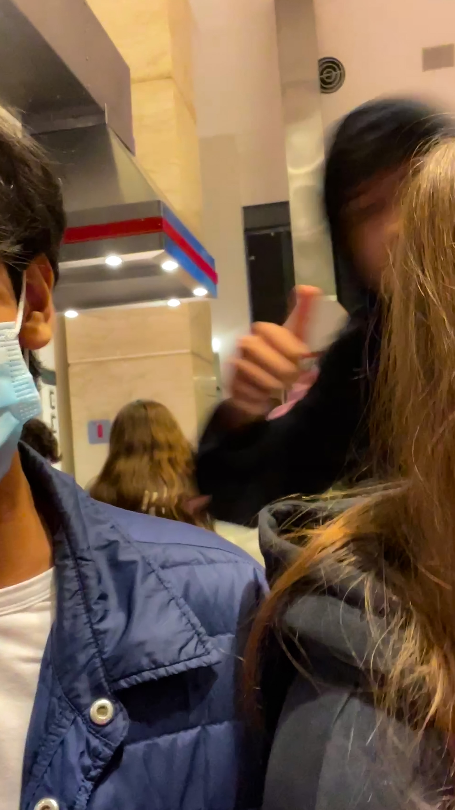

PICTURES
Esta seccion la dedicare a comentar fotos con mi noviaEl 20 de marzo de este año pedi a prema que fuera mi novia, le regale rosas y un osito de peluche, esa noche fue muy especial y divertida para mi.
CINE
En esta fotografia, prema y yo fuimos a morelia por un viaje escolar, realmente nos divertimos, esa noche compramos comida china y caminamos por la plaza